工具简介与数据安全OVERVIEW & PRIVACY
中奖名单审核工具是一个纯网页工具，用浏览器打开线上地址即可使用，无需安装任何软件。它完成三件事：
- 判有效：按订单金额、渠道前缀、支付时间自动过滤出有效订单，并区分强基、升学两个订单池；
- 判奖池：按工号名下订单逐单累计，自动判定每位中奖者属于巅峰池还是进阶池；
- 判归属：用问卷中的加密手机号查订单池，撞号时再按销售姓名二次匹配，无法唯一命中的自动转入待审核。
数据安全：所有 Excel 解析、匹配、统计均在您自己的浏览器本地完成（基于 SheetJS 本地解析），文件内容不会上传到任何服务器。审核记录、绿色通道码、话术模板也只保存在当前浏览器中。
全站共三个页面，均从审核主页进入：
- 审核主页（index.html）：上传文件、配置参数、审核、查看与导出结果；
- 话术模板管理页（templates.html）：维护沟通话术；
- 高经团队周进度核算页（team-progress.html）：从主页右上角按钮进入。
三分钟快速上手QUICK START
完整审核只需四步：
上传 4 个表
强基订单池、升学订单池、进阶问卷、巅峰问卷，可一次性全选拖入
→确认参数
周期名称、中奖期数、时间范围、金额门槛，默认值可直接用
→开始审核
确认列映射后自动计算，撞号 / 异常记录自动分流待审核
→处理并导出
处理无效名单，导出有效订单池与审核结果两个 Excel
第一次使用建议按本手册第 3～9 章顺序阅读；熟悉后可直接从第 12 章「常见问题」查阅具体操作。
第一步：上传 4 个 ExcelSTEP 1 · UPLOAD
打开在线地址后，页面最上方是上传区。点击虚线框选择文件，或把文件直接拖入均可；4 个文件可以一次性全选后一起拖入，系统会按内容自动识别类型，并在下方四个槽位中显示识别结果。
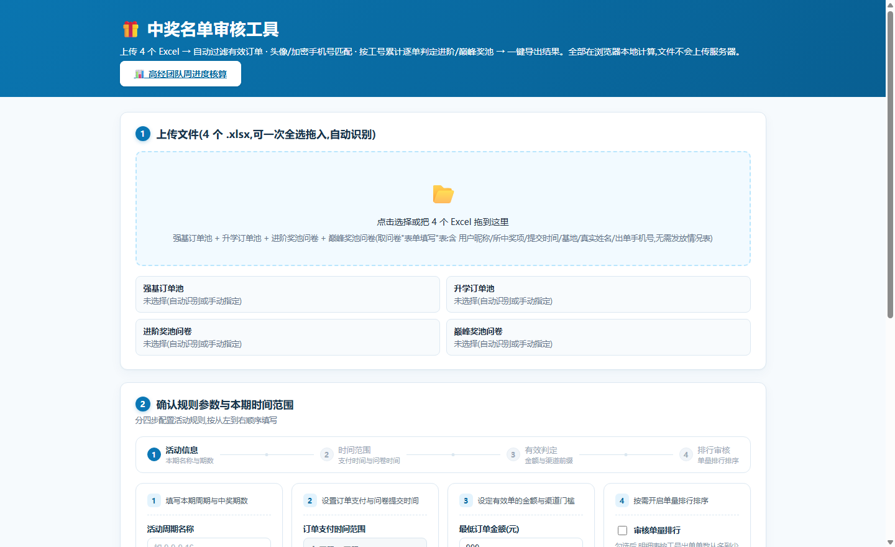
需要准备的 4 个 .xlsx 文件：
- 强基订单池、升学订单池：订单导出表，用于有效单过滤与归属匹配；
- 进阶奖池问卷、巅峰奖池问卷：取问卷中的表单填写表（需含 用户昵称 / 所中奖项 / 提交时间 / 基地 / 真实姓名 / 出单手机号 等列），无需发放情况表。
右上角 📊 高经团队周进度核算 是独立的小工具入口（见第 11 章），与名单审核互不影响。
第二步：确认规则参数与时间范围STEP 2 · PARAMETERS
4.1 参数四步配置
上传区下方是 2 号卡片「确认规则参数与本期时间范围」，按顶部步骤条从左到右分四步，四张卡片分别对应：
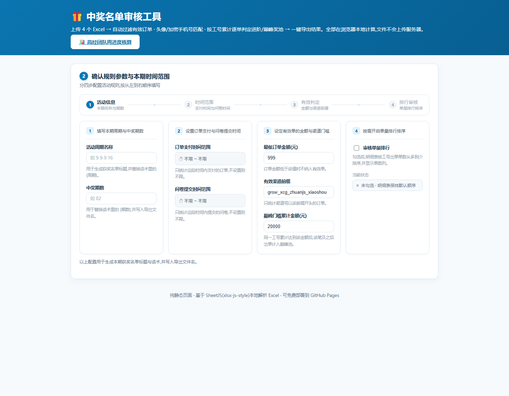
- 活动信息：填写活动周期名称（如
9.9-9.16，用于生成获奖名单标题、替换话术中的{周期}）与中奖期数（如82，用于替换{期数}并写入导出文件名）。 - 时间范围：设置订单支付时间、问卷提交时间的起止范围（设置方法见 4.2）。
- 有效判定：最低订单金额(元)默认
999，低于此值的订单不算有效单；有效渠道前缀默认grow_xcg_zhuanjs_xiaoshou，只统计该前缀开头的渠道号；巅峰门槛累计金额(元)默认20000（2 万）。 - 排行审核：勾选审核单量排行后，明细表按工号出单单数从多到少排序并显示单数列；不勾选则保持默认顺序。
所有参数都会自动保存在本机浏览器，刷新或下次打开页面自动恢复，无需重复填写。步骤条变蓝只表示当前正在聚焦该步，与是否已填写无关。
4.2 设置时间范围
点击参数卡 2 中的 ⏱ 不限 ~ 不限 按钮，分别弹出订单支付时间、问卷提交时间的设置窗口：
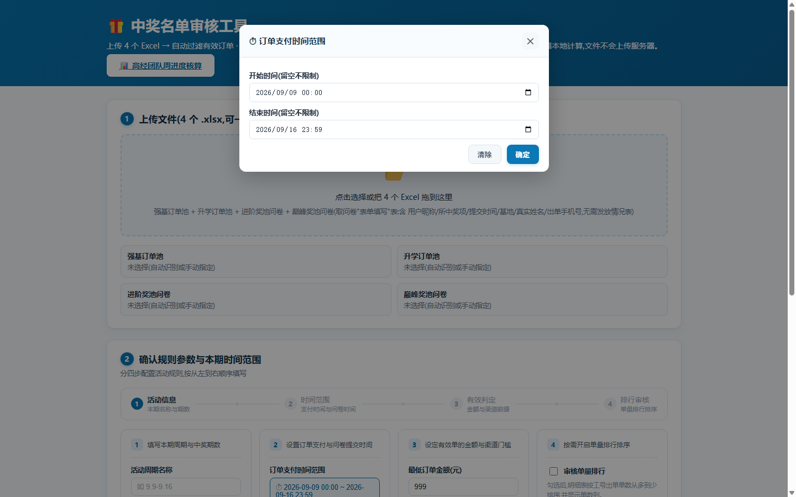
- 选择开始、结束时间后点 确定 生效；按钮文字会变成已选范围；
- 订单按支付时间过滤、问卷按提交时间过滤，范围之外的数据不参与统计；
- 任一端留空即该端不限；点 清除 可恢复为全部不限。
4.3 判池规则与归属匹配说明
点击参数区下方的 展开规则 ▾ 按钮，可以查看本期完整的判池与归属规则（再点一次 收起规则 折叠）：
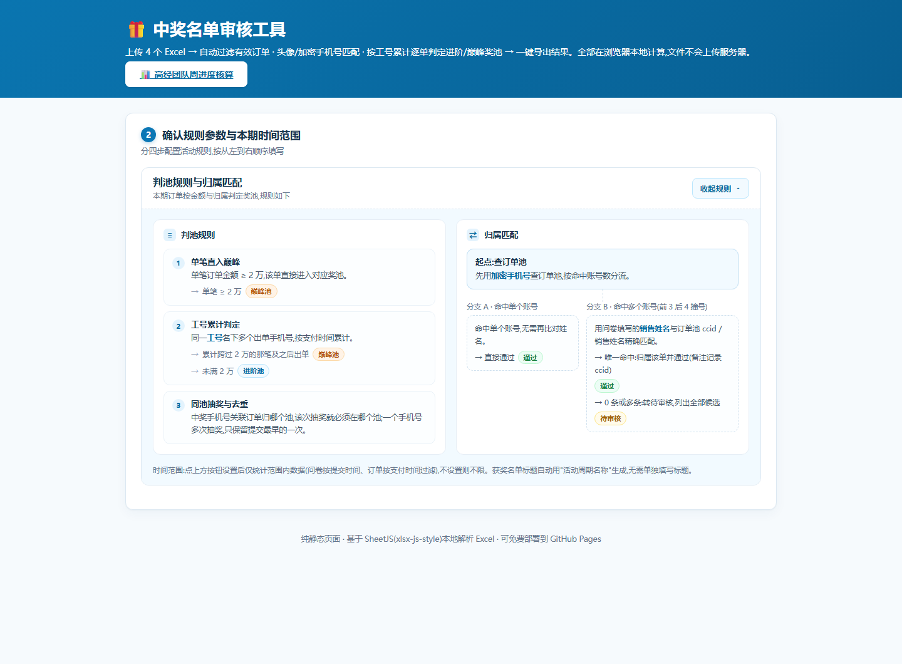
判池规则（系统自动执行）
- 单笔直入巅峰：单笔订单金额 ≥ 2 万，该单直接计入巅峰池；
- 工号累计判定：同一工号名下即使有多个出单手机号，也按支付时间逐笔累计——累计跨过 2 万的那一笔及之后出单计入巅峰池，未满 2 万的计入进阶池；
- 同池抽奖与去重：中奖手机号关联的订单归哪个池，该次抽奖就必须在哪个池；同一手机号多次抽奖，只保留提交时间最早的一次。
归属匹配（系统自动执行）
- 起点：查订单池。先用问卷中的加密手机号查订单池；
- 分支 A · 命中单个账号：无需再比对姓名，直接通过；
- 分支 B · 命中多个账号（前 3 后 4 掩码撞号）：用问卷填写的销售姓名与订单池 ccid / 销售姓名精确匹配——唯一命中则归属该单并通过（备注记录 ccid）；命中 0 条或多条，则转待审核并列出全部候选人。
审核前的工具按钮TOOLBAR
参数区下方的蓝色工具栏共有 5 个按钮，鼠标悬停在 生成绿色通道码 上还会出现规则提示气泡：
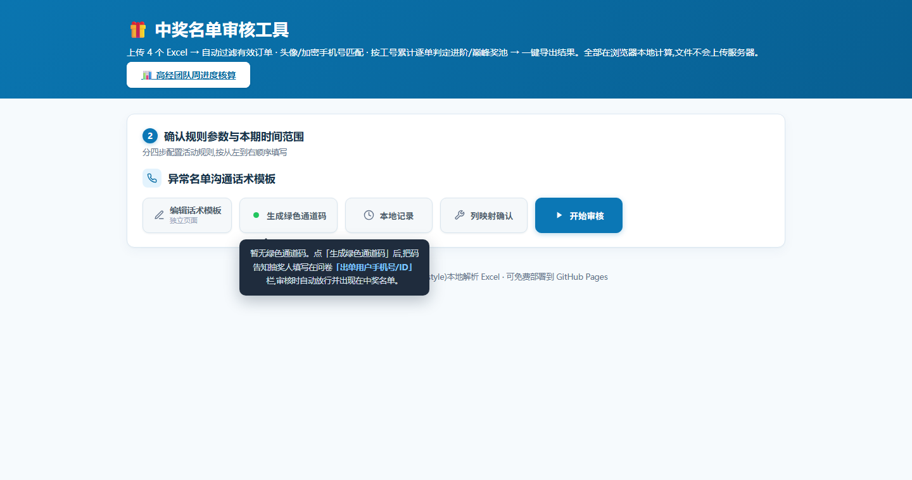
5.1 编辑话术模板
点击 编辑话术模板（按钮下方有「独立页面」小字）会在新的独立页面管理全部话术模板，详见第 10 章。模板修改后自动保存在本机，审核主页直接读取。
5.2 生成绿色通道码
用于处理临时放行场景。点击 生成绿色通道码 即刻生成一个形如 GREEN-8K3D-92 的一次性码（按钮上的绿点表示当前已有生成的码）。
- 把绿码告知抽奖人，让其填写在问卷的出单用户手机号/ID栏，系统识别到绿码后自动放行并入名单；
- 已生成的绿码以浮层形式列在按钮下方，每条可单独复制 / 删除，也可清空全部；
- 绿码只保存在当前浏览器中。
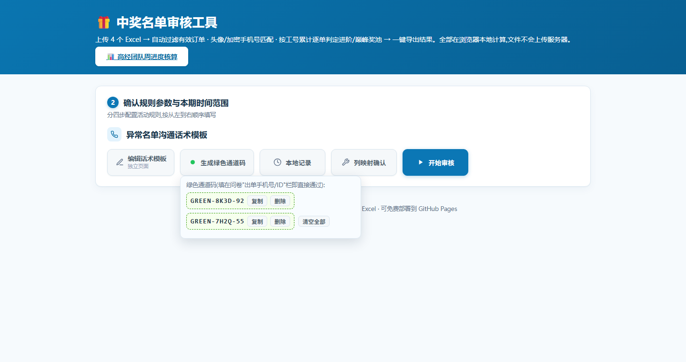
5.3 本地记录 / 列映射确认 / 开始审核
- 本地记录：快速打开结果区的「历史记录」页签（需已有一次审核结果），存档的加载、命名等操作见 9.5；
- 列映射确认：手动打开列映射弹窗，检查 / 修改每个字段对应 Excel 的哪一列（详见第 6 章）；
- ▶ 开始审核：蓝色主按钮，确认参数无误后点击即开始计算。每次点击也会自动把当前结果存档一条。
列映射确认弹窗COLUMN MAPPING
4 个文件识别完成后（或点击 列映射确认 时），系统会弹出列映射确认窗口，展示每个需要的字段自动识别到了 Excel 的哪一列：
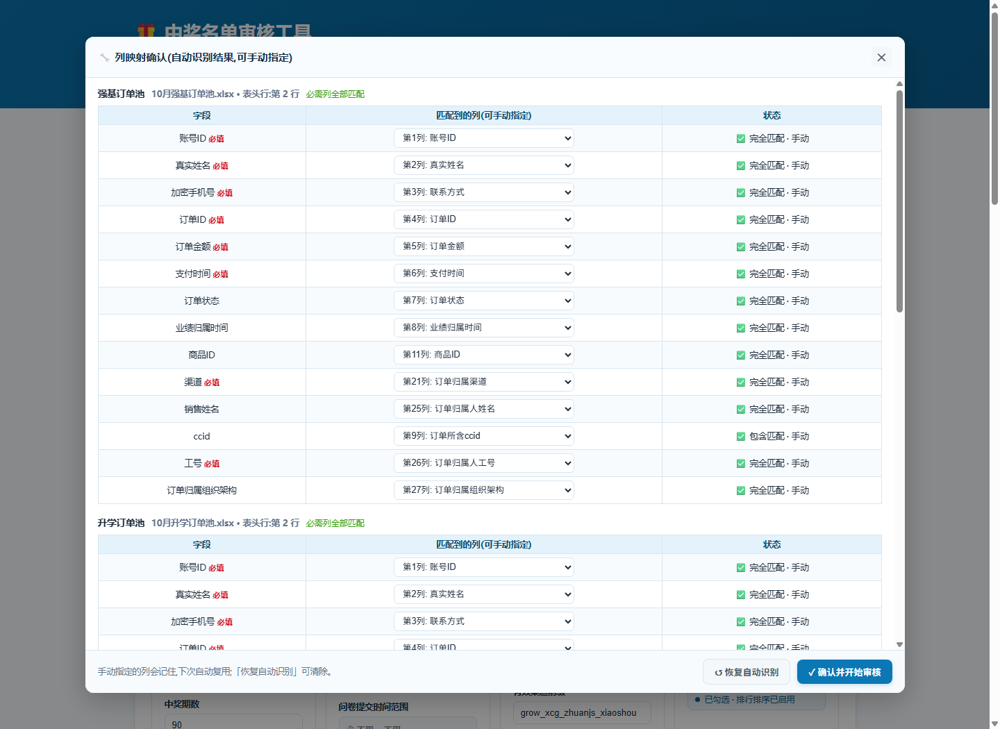
- 自动识别正确时直接点 ✓ 确认并开始审核 即可；
- 若某列识别错误或提示必填未匹配，可在「匹配到的列」下拉中手动指定正确列；
- 手动指定的对应关系会被记住，下次上传同类表自动复用；点 ↺ 恢复自动识别 可清除手动指定。
沿用上次审核记录CONTINUE LAST RUN
如果本次上传的与上次是同一组文件，审核开始前会弹出确认窗口，显示上次的时间周期与统计结果：
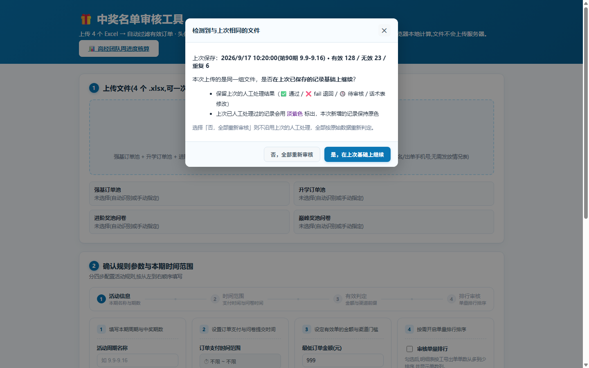
- 点 是，在上次基础上继续：保留上次的全部人工处理结果（✅ 通过 / ❌ fail 退回 / 🕓 待审核 / 话术表修改）。上次已人工处理过的记录会用淡紫色标出，本次新增记录保持原色，方便区分；
- 点 否，全部重新审核：忽略历史处理，全部按原始数据重新判定。
审核结果总览与导出RESULTS & EXPORT
审核完成后，页面展开 3 号区域「审核结果与导出」：顶部是统计卡片，向下依次是导出按钮、5 个结果页签。
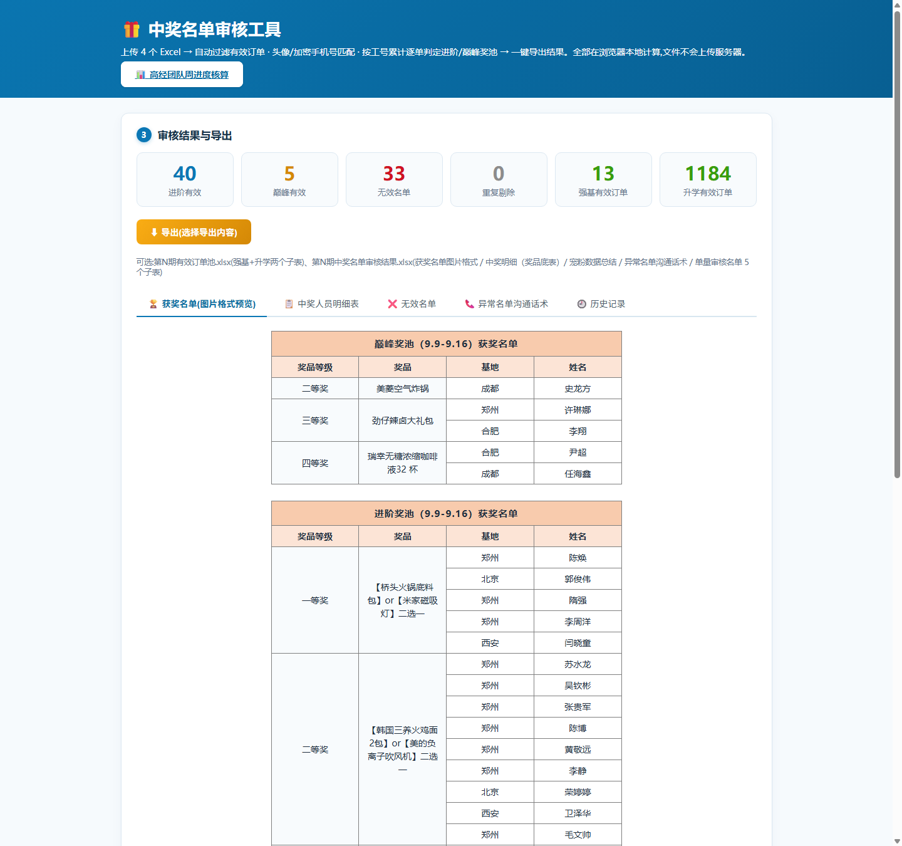
（点击统计数字卡片还可查看对应明细弹窗。）
导出文件
点击橙色的 ⬇ 导出(选择导出内容)，在弹窗中勾选需要的文件：
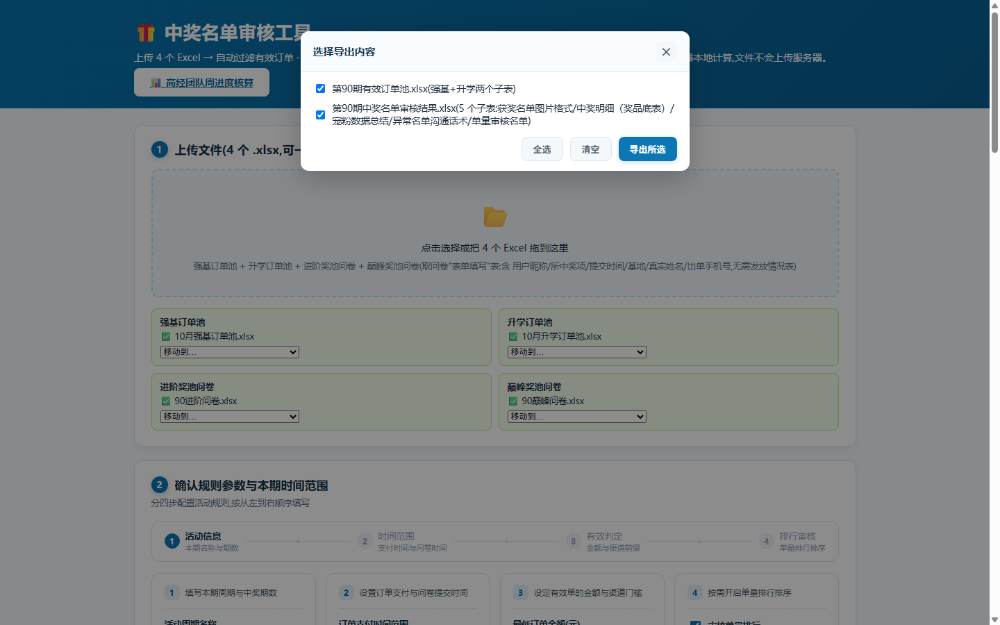
- 第 N 期有效订单池.xlsx：含强基、升学两个子表；
- 第 N 期中奖名单审核结果.xlsx：含 5 个子表——获奖名单图片格式、中奖明细（奖品底表）、宠粉数据总结、异常名单沟通话术、单量审核名单；
- 文件名中的「N」自动取参数中填写的中奖期数。可用 全选 / 清空 快速勾选，最后点 导出所选，文件通过浏览器下载到本地。
五个结果页签详解RESULT TABS
9.1 🏆 获奖名单（图片格式预览）
默认页签，按奖池展示最终的巅峰、进阶两张获奖名单表格（见图 9），名单标题自动使用「活动周期名称」生成。确认无误后通过第 8 章的导出按钮即可拿到与页面一致的名单文件。
9.2 📋 中奖人员明细表
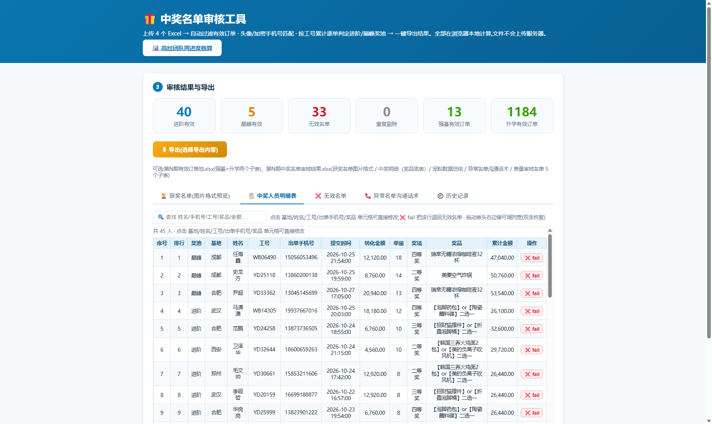
- 顶部搜索框可按 姓名 / 手机号 / 工号 / 奖品 / 金额 等快速查找；
- 直接点击 基地 / 姓名 / 工号 / 出单手机号 / 奖品 单元格即可修改，改后导出同步；
- 每行操作列的 ✕ fail 可把该记录退回无效名单；
- 拖动表头右边缘可调整列宽，双击表头边缘恢复默认宽度。
9.3 ❌ 无效名单处理
所有未通过自动校验的记录集中在此，每行用红字标明无效原因，下方还包含「重复剔除」记录：
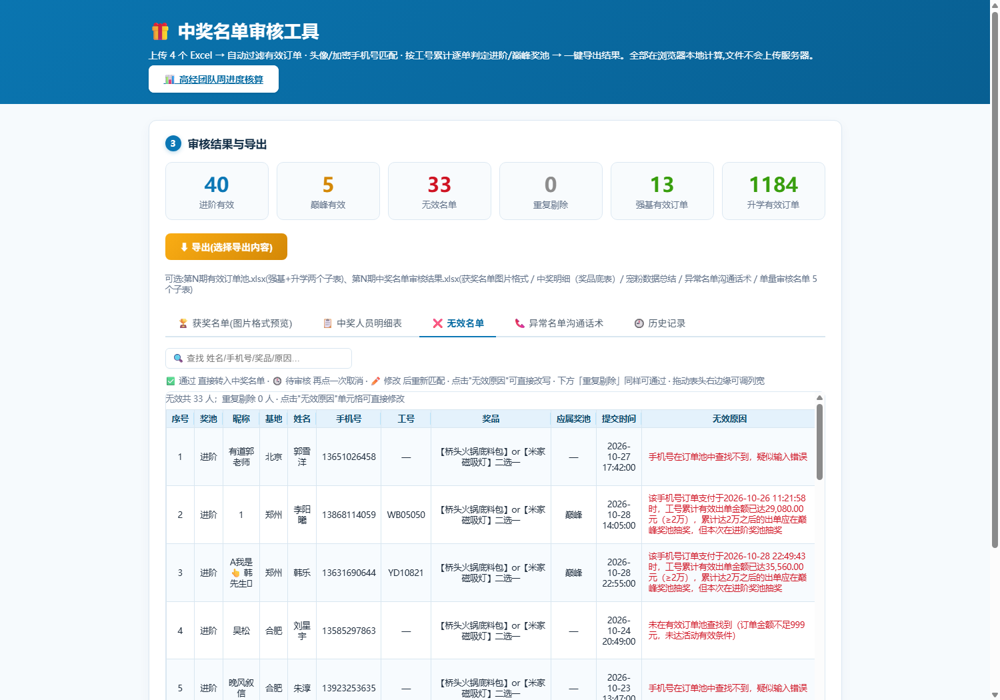
操作列提供三个人工处理按钮：
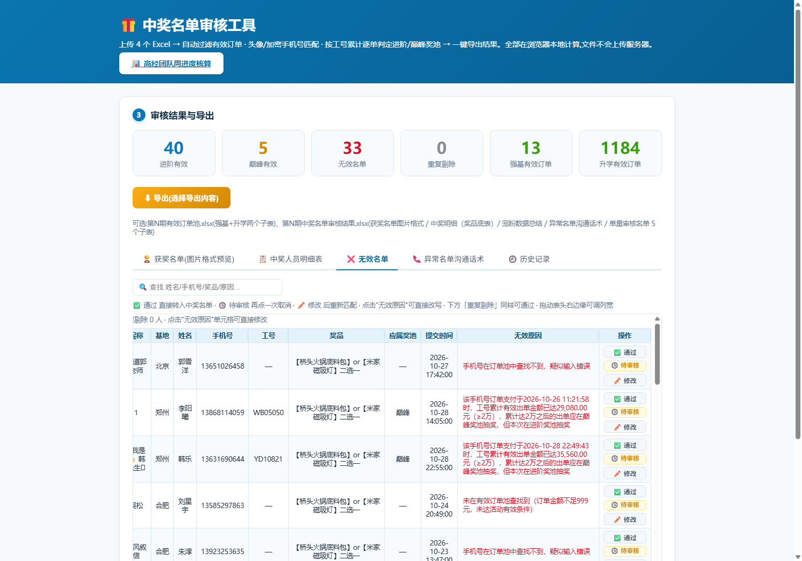
- ✅ 通过：人工确认无误，该记录直接转入中奖人员明细表；
- 🕓 待审核：先标记挂起，标记后按钮变为「🕓 已待审核」，下方出现「点击取消」小字，再点一次即可取消待审核状态；
- ✏️ 修改：打开修改窗口（见图 15），更正信息后重新参与匹配。
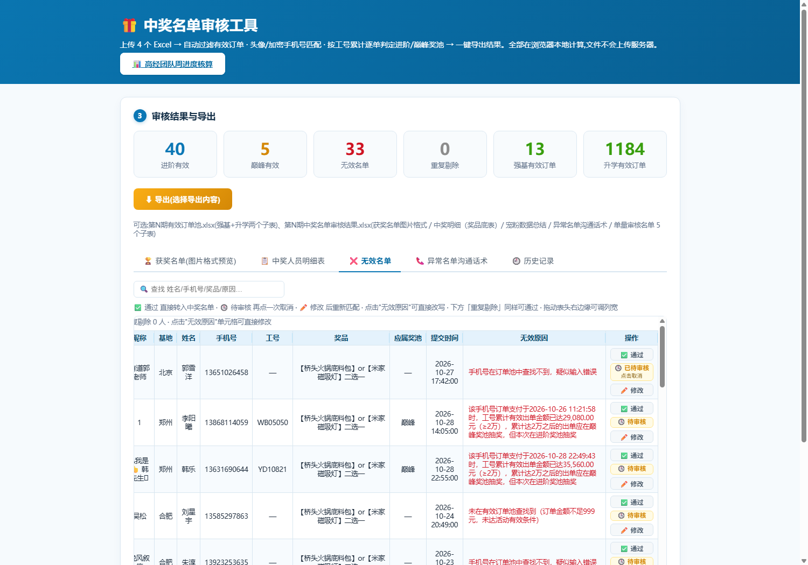
点击 ✏️ 修改 弹出「修改信息并重新匹配」窗口，顶部显示当前人员信息，可更正真实姓名、出单手机号、基地三项：
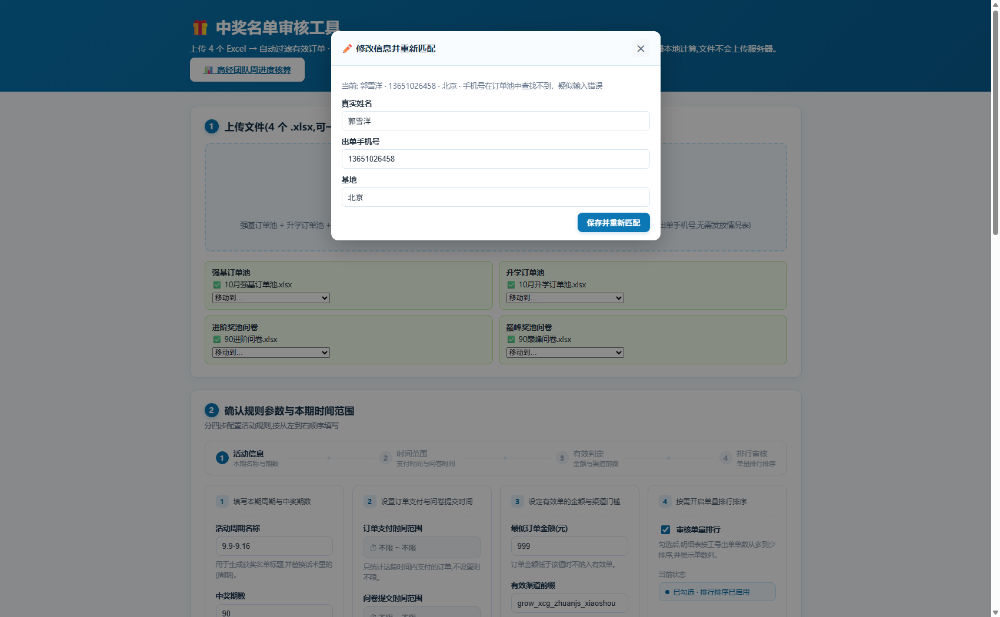
- 出单手机号请填写 11 位手机号，保存后系统用新信息重新匹配订单池；
- 此外，直接点击表格中的「无效原因」单元格也可以就地改写原因文字。
9.4 📞 异常名单沟通话术
系统为每条异常记录按模板自动生成沟通话术，个人信息已自动填入，可直接复制发给对方：
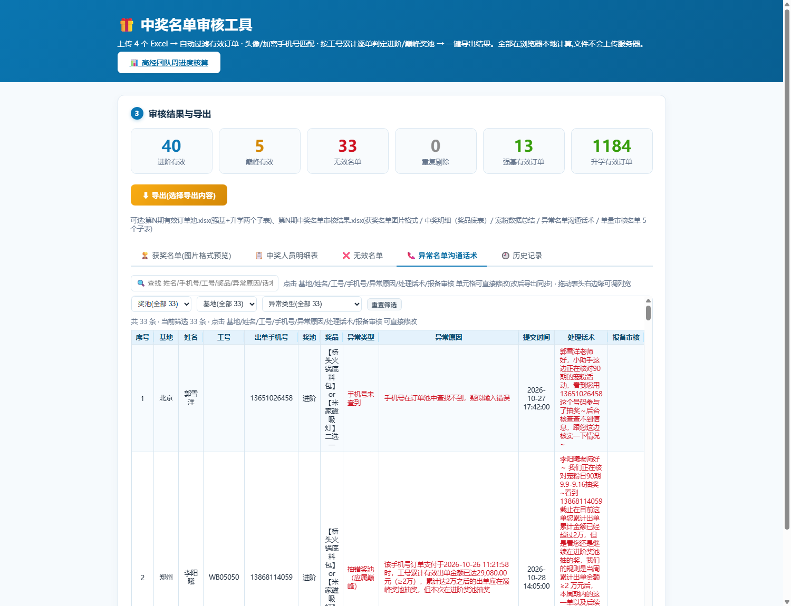
- 可用 奖池、基地、异常类型 三个下拉组合筛选，重置筛选 一键恢复；
- 点击 基地 / 姓名 / 工号 / 手机号 / 异常原因 / 处理话术 / 报备审核 等任意单元格可直接修改，修改后导出内容同步更新；
- 话术模板在第 10 章的独立页面统一维护。
9.5 🕘 历史记录
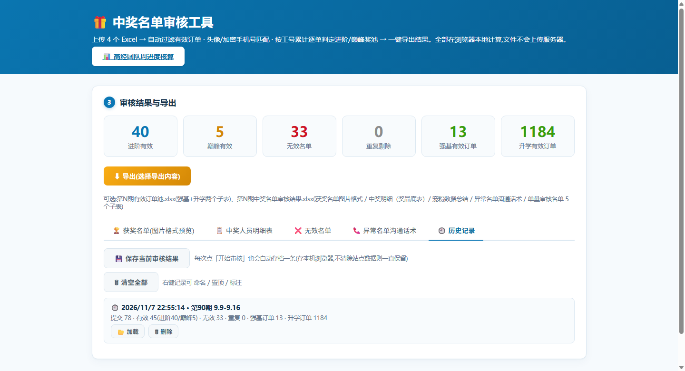
- 每次点 ▶ 开始审核 都会自动存档一条；也可随时点 💾 保存当前审核结果 手动存当前状态；
- 每条存档可 加载 恢复查看，或 删除；在存档条目上点击鼠标右键可进行命名、置顶、标注，方便区分多期结果；
- 清空全部 会删除所有存档（操作有确认提示）；
- 存档只保存在本机浏览器中，不清除浏览器站点数据就会一直保留。
话术模板管理页TEMPLATES
从审核主页工具栏点 编辑话术模板 进入。每个模板占一张卡片：上方是模板名称（名称 +（括号内补充说明）会自动显示为两行，括号内为小字），下方是话术正文，右下角可 ✕ 删除该模板。
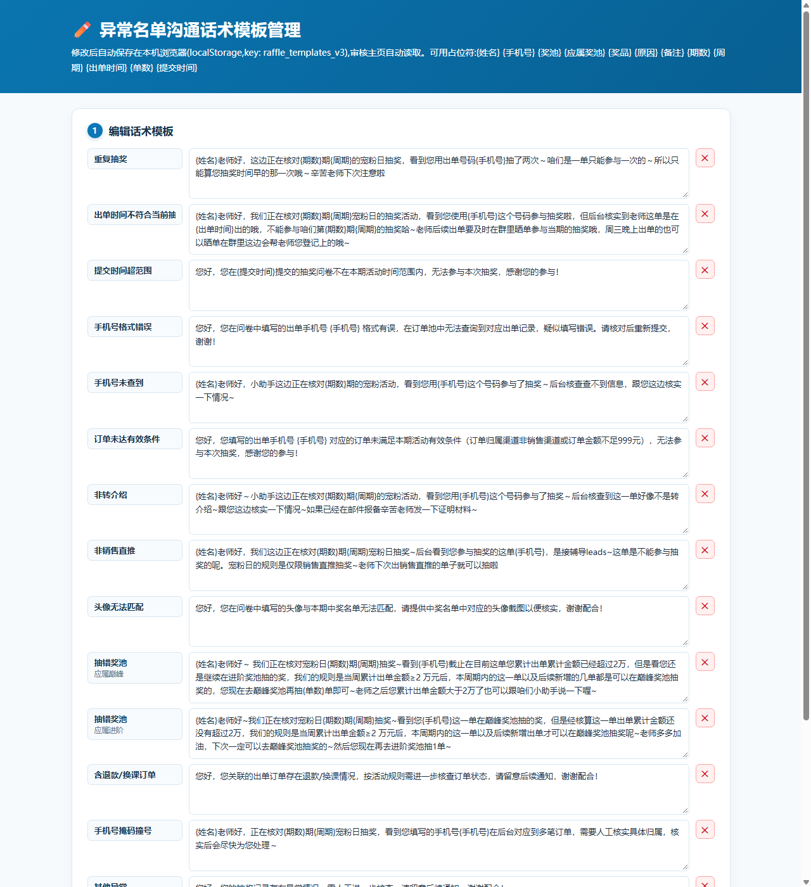
- 正文修改后自动保存到本机浏览器，回到审核主页即生效；
- 点 ＋ 新增模板 可自建一条；↺ 恢复默认模板 可还原为系统默认；
- 话术中可使用占位符，生成时自动替换为本人信息：
{姓名}{手机号}{奖池}{应属奖池}{奖品}{原因}{备注}{期数}{周期}{出单时间}{单数}{提交时间} - 完成后点页面底部 ← 返回审核主页 回到审核流程。
高经团队周进度核算TEAM PROGRESS
从审核主页右上角 📊 高经团队周进度核算 进入，用于按高经团队汇总本期转化金额、折算周目标并排名。同样全程本地计算。
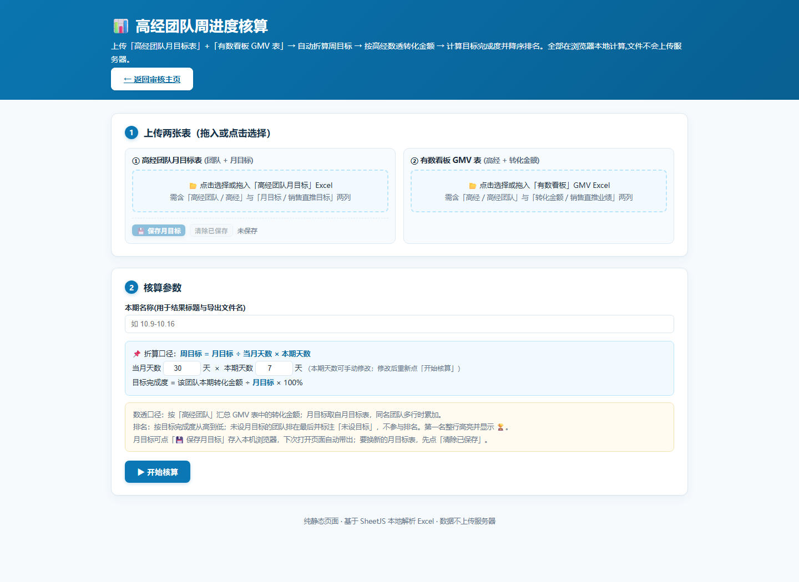
- 上传两张表：①「高经团队月目标表」（需含 高经团队/高经 与 月目标/销售直推目标 两列）；②「有数看板」GMV 表（需含 高经/高经团队 与 转化金额/销售直推业绩 两列）。月目标表上传后可点 💾 保存月目标 固定在本机，以后打开自动带出；要换新月份目标表时先点 清除已保存（需两次确认）。
- 填写核算参数：本期名称（如
10.9-10.16，用于标题和导出文件名）。页面给出折算口径：周目标 = 月目标 ÷ 当月天数 × 本期天数，天数可按实际修改；目标完成度 = 本期转化金额 ÷ 月目标 × 100%。确认后点 ▶ 开始核算。 - 查看与导出：结果按目标完成度从高到低排名，第一名整行高亮并显示 🏆；未设月目标的团队排最后并标注「未设目标」。可搜索团队 / 基地，点 ⬇ 导出核算结果 Excel 下载。
同名团队在月目标表中出现多行时，月目标自动累加。页面左上角 ← 返回审核主页 可随时切回名单审核。